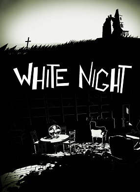

-
Topul celor mai bine vândute jocuri de pe Steam
Cifrele de vânzări ale jocurilor publicate prin intermediul Steam reprezintă un subiect despre care cei de la Valve refuză să comenteze. Ei bine, Sergey Galyonkin de la SteamSpy a reuşit să dezvolte un algoritm prin intermediul căruia ne putem face o idee destul de clară asupra celor mai bine vândute titluri comercializate prin intermediul Steam.
-
Un nou joc Warhammer "DeathWatch" a fost anuntat
-
White Night Review: groaza în alb şi negru
M-am obişnuit că, atunci când vine vorba de Activision, căsuţa de e-mail să-mi fie invadată de tot felul de veşti şi comunicate de presă legate de Call of Duty, Destiny, Skylanders sau numeroasele jocuri ale “frăţiorului” Blizzard Entertainment. Astfel, nu mică mi-a fost mirarea când Activision a trimis un simplu anunţ pe care îl pot rezuma cam aşa: “Am lansat White Night, digital, pentru PC şi console”. Ce este acest White Night şi de ce aflăm de el abia în momentul lansării?
-
Fifa 14 setari controale tastatura